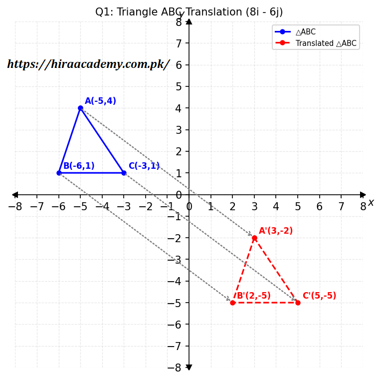
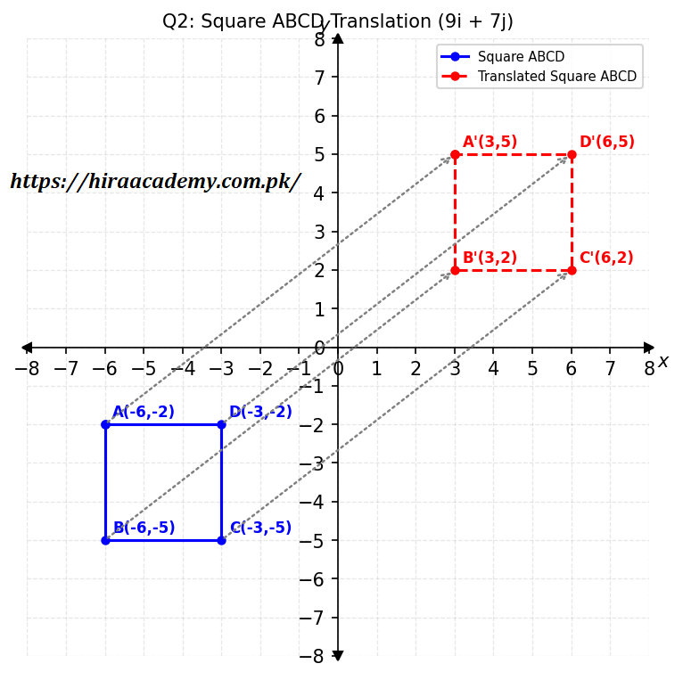
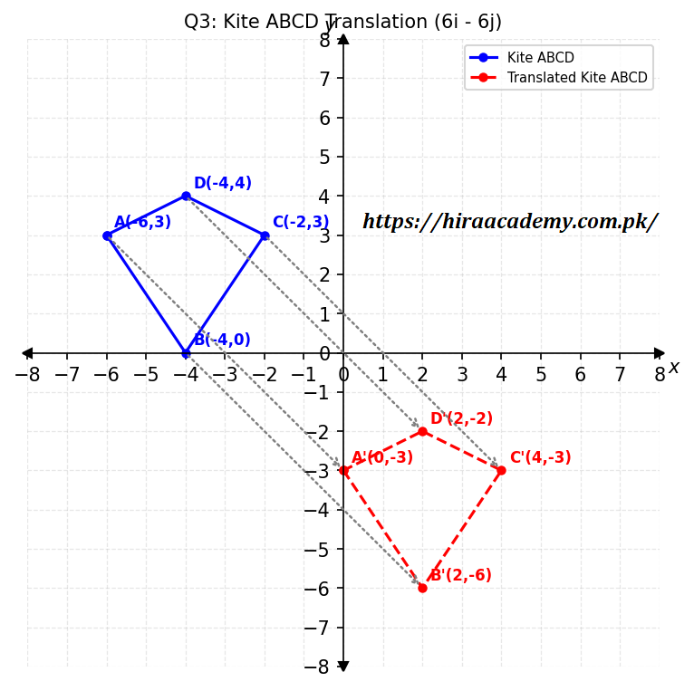
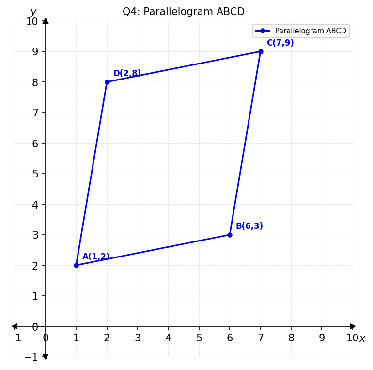
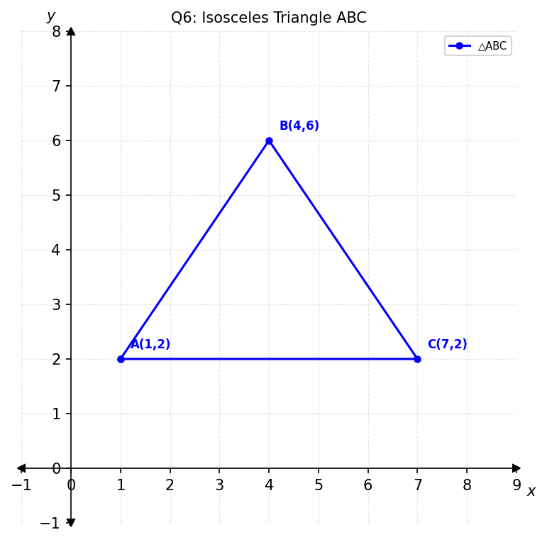
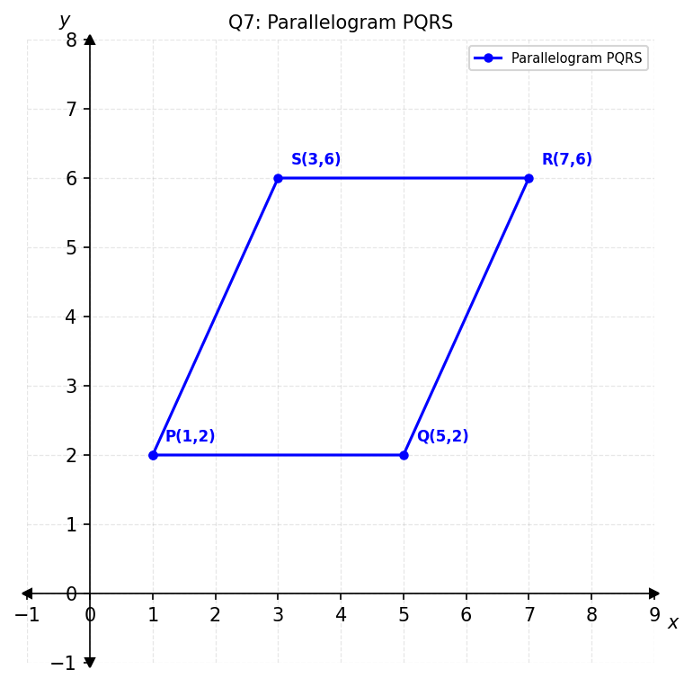
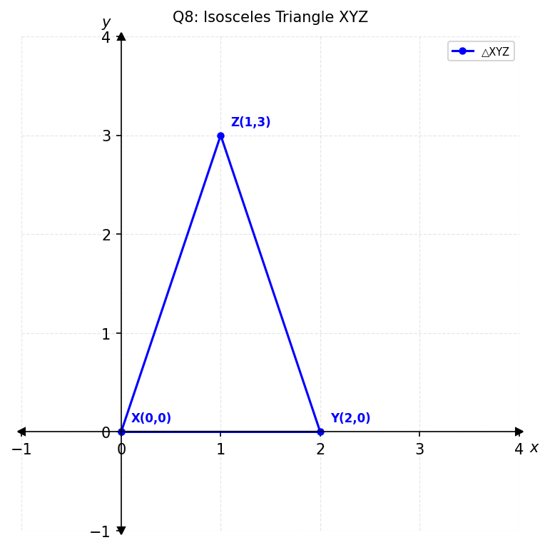
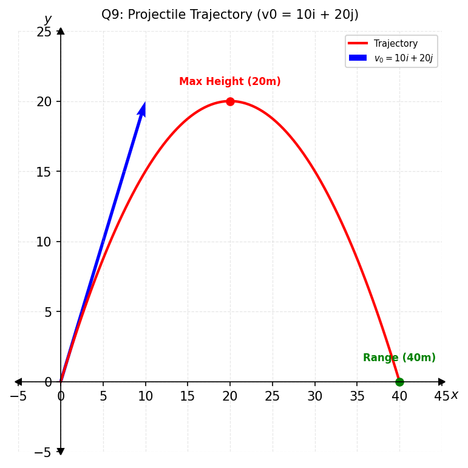

Prepared by Muhammad Tayyab, Subject Specialist Mathematics, Govt Christian High School Daska
📌 Based on National Curriculum 2023 / PECTAA Syllabus
📖 What's Inside: This exercise covers vector translation of shapes (triangle, square, kite), parallelogram verification, isosceles triangle using vector magnitude, projectile motion, and velocity vectors. Perfect for Punjab Boards exam preparation.
📚 Related Resources – Chapter 6: Vectors in Plane
Class 10 Math Chapter 6 Exercise 6.3 – Vector Translation & Applications: Complete Guide
Exercise 6.3 of Chapter 6 takes vectors beyond arithmetic and applies them to real geometric and physical problems. Students learn how to translate shapes using vectors, verify that a quadrilateral is a parallelogram, prove that a triangle is isosceles, analyse projectile motion, and compute resultant velocities.
What You Will Learn
By working through Exercise 6.3, students master: translating geometric shapes using vector addition, verifying parallelogram properties by comparing opposite side vectors, checking whether a triangle is isosceles by comparing side magnitudes, and applying vectors to motion problems.
Topics Covered in This Exercise
- Vector Translation – translating triangles, squares, and kites
- Parallelogram Verification – using \(\overline{AB} = \overline{DC}\)
- Isosceles Triangle – checking for equal side magnitudes
- Projectile Motion – finding maximum height and range
- Change in Velocity – computing \(\Delta \bar{v} = \bar{v}' - \bar{v}\)
- Resultant Velocity – combining vectors to find net motion
Why Exercise 6.3 Is Important
Exercise 6.3 shows students how vector algebra applies to geometry and physics. Board exam papers frequently feature translation, parallelogram, and isosceles triangle questions, and the projectile motion problem type appears in cross-topic questions. This exercise builds skills that carry into Chapter 7 (Trigonometry) and beyond.
Punjab Board Preparation
Students preparing for board exams under any of the 10 BISE Punjab boards should prioritise this exercise. Translation, parallelogram proofs, and isosceles triangle checks are frequently tested. Practising every question by hand is highly recommended.
Exam Tips for Vector Translation
- When translating, add the translation vector to each vertex's position vector.
- For parallelogram problems, use \(\overline{AB} = \overline{DC}\) (not \(\overline{AB} = \overline{CD}\)).
- For isosceles triangles, calculate all three side magnitudes and compare.
- For projectile problems, use the standard equations of motion with vector components.
Common Mistakes Students Make
- Reversing the direction of subtraction when finding side vectors.
- Confusing the diagonal \(\overline{AC}\) with a side length in isosceles checks.
- Forgetting to take the square root when computing magnitudes.
- Not simplifying the resultant vector fully before finding its magnitude.
Plot \(A(-5,4)\), \(B(-6,1)\) and \(C(-3,1)\) to form a \(\triangle ABC\). Translate \(\triangle ABC\) to \(\triangle A'B'C'\) by translation vector \(8\hat{i} - 6\hat{j}\).
New vertex A':
New vertex B':
New vertex C':

Hence the coordinates of translated triangle \(\triangle A'B'C'\) are \((3, -2)\), \((2, -5)\), and \((5, -5)\).
Plot \(A(-6, -2)\), \(B(-6, -5)\), \(C(-3, -5)\) and \(D(-3, -2)\) to form a square \(ABCD\). Translate square \(ABCD\) to square \(A'B'C'D'\) by translation vector \(9\hat{i} + 7\hat{j}\).

Hence the vertices of square \(A'B'C'D'\) are \(A'(3,5)\), \(B'(3,2)\), \(C'(6,2)\), and \(D'(6,5)\).
Plot \(A(-6, 3)\), \(B(-4, 0)\), \(C(-2, 3)\) and \(D(-4, 4)\) to form a kite \(ABCD\). Translate kite \(ABCD\) to kite \(A'B'C'D'\) by translation vector \(6\hat{i} - 6\hat{j}\).

Hence the vertices of kite \(A'B'C'D'\) are \(A'(0,-3)\), \(B'(2,-6)\), \(C'(4,-3)\), and \(D'(2,-2)\).
The coordinates of \(A\), \(B\) and \(D\) are \((1, 2)\), \((6, 3)\) and \((2, 8)\) respectively. Find the coordinates of \(C\) by using vector method if \(ABCD\) is a parallelogram.
Let coordinates of \(C = C(x,y)\). Since \(ABCD\) is a parallelogram, \(\overline{AB} = \overline{DC}\).
Equating components:

Hence coordinates of \(C = C(7, 9)\).
In parallelogram \(ABCD\), \(\overline{AB} = 6\hat{i} + 2\hat{j}\) and \(\overline{DC} = -6\hat{i} - 2\hat{j}\). Show that the opposite sides are equal in magnitude and parallel.
Since \(|\overline{AB}| = |\overline{DC}| = \sqrt{40}\), the opposite sides are equal in magnitude.
Also, \(\overline{DC} = -6\hat{i} - 2\hat{j} = -(6\hat{i} + 2\hat{j}) = -\overline{AB}\). Hence they are parallel.
Therefore, opposite sides \(\overline{AB}\) and \(\overline{DC}\) are equal in magnitude and parallel.
Points \(A(1,2)\), \(B(4,6)\) and \(C(7,2)\) form a triangle. Check whether triangle \(ABC\) is an isosceles by using vector magnitude.

Since \(|\overline{AB}| = |\overline{BC}| = 5\), triangle \(ABC\) is isosceles.
Use vectors to show that \(PQRS\) is a parallelogram, where \(P(1,2)\), \(Q(5,2)\), \(R(7,6)\) and \(S(3,6)\).

Since \(\overline{PQ} = \overline{SR}\) and \(\overline{PS} = \overline{QR}\), \(PQRS\) is a parallelogram.
Use vectors to show that triangle \(XYZ\) is an isosceles, where \(X(0,0)\), \(Y(2,0)\) and \(Z(1,3)\).

Since \(|\overline{YZ}| = |\overline{XZ}| = \sqrt{10}\), triangle \(XYZ\) is isosceles.
A ball is projected with initial velocity vector \(\bar{v}_0 = 10\hat{i} + 20\hat{j}\). The horizontal component is in the x-direction and gravity is \(\bar{g} = 0\hat{i} - 10\hat{j}\). Find the maximum height and horizontal range.
Given: \(v_x = 10\), \(v_{iy} = 20\), \(g = -10\)
Maximum Height (h): At maximum height, \(v_{fy} = 0\).
Horizontal Range (R): Time to reach max height: \(v_f = v_i + gt\)
Total time of flight: \(T = 2t = 4\)

Hence, Maximum Height = 20 units, Horizontal Range = 40 units.
A car enters a loop with velocity vector \(\bar{v} = 30\hat{j}\) and exits with velocity \(\bar{v}' = 30\hat{i}\). What is the change in velocity vector?
The change in velocity vector is \(\Delta \bar{v} = 30\hat{i} - 30\hat{j}\).
An aeroplane has airspeed \(\bar{v}_p = 20\hat{i}\) and there is a crosswind \(\bar{v}_w = 50\hat{j}\). Find the resultant velocity and its magnitude.
Resultant velocity = \(20\hat{i} + 50\hat{j}\), Magnitude = \(10\sqrt{29}\).
📈 Key Concepts & Quick Revision
- Vector Translation: Add translation vector to position vector of each vertex.
- Parallelogram Property: Opposite sides are equal and parallel: \(\overline{AB} = \overline{DC}\).
- Isosceles Triangle: At least two side vectors have equal magnitude.
- Projectile Motion: \(h = \frac{v_i^2}{2g}\), \(R = v_x \times T\), \(T = 2t\).
- Change in Velocity: \(\Delta \bar{v} = \bar{v}' - \bar{v}\).
- Resultant Velocity: Add vectors component-wise.
🎯 Important Definitions
- Translation: A transformation that moves every point of a figure by the same vector.
- Parallelogram: A quadrilateral with both pairs of opposite sides parallel and equal.
- Isosceles Triangle: A triangle with at least two sides of equal length.
- Projectile Motion: Motion of an object thrown into the air under gravity.
❓ Frequently Asked Questions
What is taught in Exercise 6.3 of Class 10 Math Chapter 6?
Exercise 6.3 covers vector translation of shapes (triangle, square, kite), verification of parallelogram using vectors, isosceles triangle using vector magnitude, projectile motion, and velocity vectors.
How many questions are there in Chapter 6 Exercise 6.3?
Exercise 6.3 has 11 questions covering vector translation, parallelogram verification, isosceles triangle, projectile motion, and velocity vectors.
Is this solution according to the PECTAA syllabus?
Yes, these solutions are prepared according to the PECTAA / National Curriculum 2023 syllabus.
Is this Exercise 6.3 solution valid for all Punjab Boards?
Yes, the content follows the unified Punjab textbook and is applicable to all 10 BISE Punjab boards.
What is vector translation?
Vector translation is the process of moving every point of a shape by the same vector, adding the translation vector to the position vector of each vertex.
How do you verify a parallelogram using vectors?
A quadrilateral is a parallelogram if opposite sides are equal and parallel, verified by showing the vectors of opposite sides are equal.
How do you check if a triangle is isosceles using vectors?
Calculate the magnitudes of all three side vectors. If at least two magnitudes are equal, the triangle is isosceles.
Are solved PDF notes available for Exercise 6.3?
Yes, a complete solved PDF is embedded on this page and available for free download.
Can I download the Chapter 6 Exercise 6.3 solution as a PDF?
Yes, use the Download PDF button on this page to save the complete solved Exercise 6.3 notes.
Is Exercise 6.3 important for Class 10 board exams?
Yes, vector translation and parallelogram verification are frequently tested in board exams.
Who prepared these Class 10 Math Chapter 6 notes?
These notes were prepared by Muhammad Tayyab, Subject Specialist Mathematics at Govt Christian High School Daska.